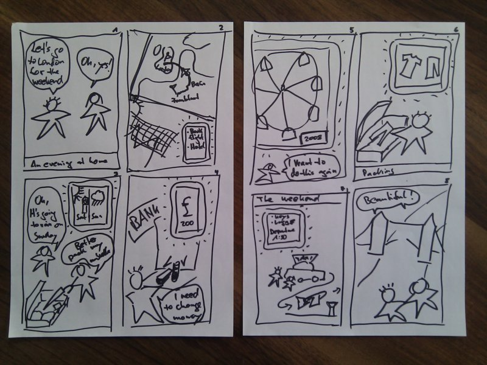
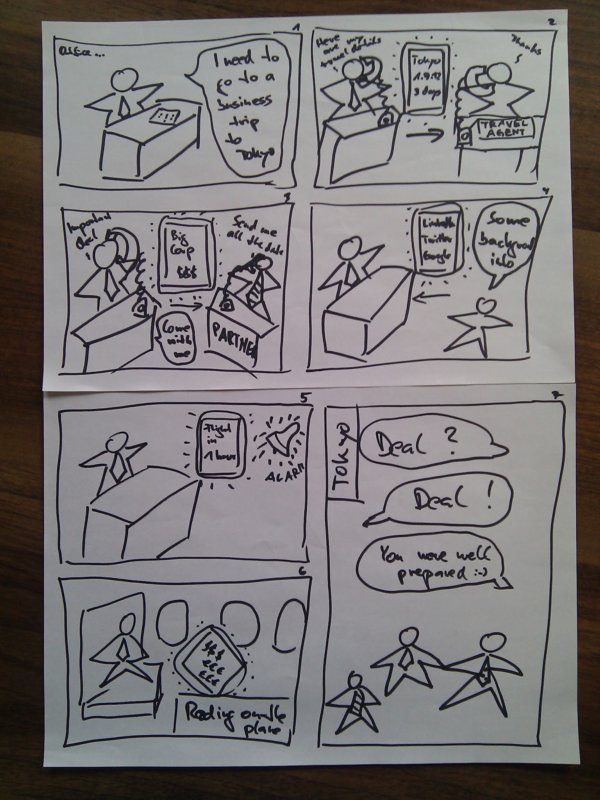

Prototyping
The next step was to come up with ideas how to address the needs found during the observations and get some feedback on them. The goal here was to define a point of view how to address the needs, and then do some quick iterations on a variety of ideas, to sort out what would work best. Doing many things quickly was one of the key points here, to not get trapped in the first best idea, but broaden the scope of thinking, and being able to choose between alternatives based on feedback. The way we did that was with storyboards and some rapid prototypes done with Balsamiq Mockups.
Point of View
When preparing to travel you need to remember and take care of lots of things. An assistant will collect all required information and guide you through what needs to be done. So you have the overview at a glance, and can relax and focus on the actual goal of your trip.
Storyboards
The first storyboard addresses the point of view by using something like a graphical todo list as assistant to get an overview:
The second storyboard takes the approach of assisting with the interaction of different people to collect the information, which gives the overview:
Rapid Prototypes
I chose the graphical todo list assistant for creating two rapid prototype designs.
The first uses a graphical hierarchy for navigation using pictures to illustrate the items and trigger associations as well as a enjoyable experience:
The second uses an illustrated text document for creating the narrative of the trip including the necessary todo items. It provides controls to enter user-provided input and populates the document automatically with data which can be deduced from the already entered information. It also shows a status summary. When all items are checked the summary goes to "ready to fly" and the user is done.